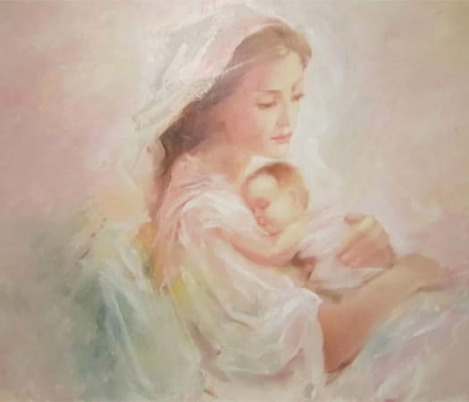

Научно-практическая конференция «Сложное целое: мать и дитя.
Недоношенные дети: право на
жизнь»

Место проведения: Конференц-зал «Ока ЛЮКС» конгресс-центра «Ока Премиум» гранд-отеля «Ока» (г. Нижний Новгород, пр. Гагарина, 27) с online-трансляцией
Организаторы:
- Министерство здравоохранения Нижегородской области
- Приволжский исследовательский медицинский университет
- Нижегородское региональное отделение Россиийского общества неонатологов
- НРОО «Ассоциация организаторов здравоохранения»
Оргкомитет:
- Козлова Елена Михайловна, д.м.н., главный внештатный специалист неонатолог Министерства
здравоохранения Нижегородской области, декан педиатрического факультета, профессор кафедры факультетской
и поликлинической педиатрии ПИМУ, Н. Новгород ‒
руководитель программного комитета.
Тел. 8-906-358-37-48, e-mail: pediatrnn@list.ru. - Суслова Марина Александровна, к.м.н., заместитель главного врача по медицинской части, врач-неонатолог ДГКБ № 1, Н. Новгород
- Каткова Надежда Юрьевна, д.м.н., доцент, зав. кафедрой акушерства и гинекологии ФДПО ПИМУ, Н. Новгород.
- Новопольцева Екатерина Геннадьевна, д.м.н., доцент, председатель Нижегородского регионального отделения Российского общества неонатологов, зав. кафедрой факультетской и поликлинической педиатрии ПИМУ, Н. Новгород.
- Военнов Олег Вячеславович, д.м.н., доцент, зав. кафедрой анестезиологии, реаниматологии и трансфузиологии ПИМУ, Н. Новгород.
- Гурьева Елена Владимировна, главный внештатный специалист педиатр Министерства здравоохранения Нижегородской области, главный врач ДГКБ № 1, Н. Новгород.
- Карпович Екатерина Ильинична, д.м.н., главный внештатный детский специалист невролог Министерства здравоохранения Нижегородской области зав. отделом нейрофизиологии Консультативно-диагностического центра ГБУЗ НО «Нижегородская областная детская клиническая больница», Н. Новгород.
Основные направления работы конференции:
- Профилактика недоношенности: диагностика и лечение внутриутробных инфекций, питание беременной, витаминотерапия и пр.
- Пренатальное и постнатальное программирование: недоношенность и метаболический синдром у взрослых, недоношенность и патология сердечно-сосудистой системы у взрослых.
- Выхаживание новорожденных (инкубаторы, матрасики с подогревом, пакеты для согревания в родовом зале и пр.).
- Особенности забора крови для лабораторных исследований.
- Вскармливание новорожденных: энтеральное и парентеральное питание (особенности венозного доступа).
- Диагностика и лечение гипербилирубинемии.
- Профилактика и лечение респираторного дистресс-синдрома.
- Лечение апноэ недоношенных детей.
- Бронхолегочная дисплазия: профилактика, диагностика и лечение.
- Инфекционные осложнения у недоношенных детей: диагностика и лечение.
- Профилактика и лечение респираторных инфекций у недоношенных детей.
- Патология ЖКТ недоношенных: некротизирующий энтероколит, аллергия к белкам коровьего молока, лактазная недостаточность, эволюция кишечной микробиоты.
- Патология ЦНС: внутрижелудочковое кровоизлияние (ВЖК), последствия перинатального повреждения ЦНС.
- Особенности органов мочевой системы у недоношенных и маловесных детей.
- Ретинопатия недоношенных: профилактика, диагностика, лечение.
- Нейросенсорная тугоухость: профилактика, диагностика, лечение.
- Особенности фосфатно-кальциевого обмена у недоношенных: остеопатия недоношенных, рахит.
- Уход за кожей недоношенного ребенка.
- Физическое и нервно-психическое развитие недоношенных детей.
- Вакцинация недоношенных.
- Абилитация и реабилитация недоношенных детей.
Дополнительная техническая информация
Мероприятие соответствует требованиям для НМО. Кредитов 6.